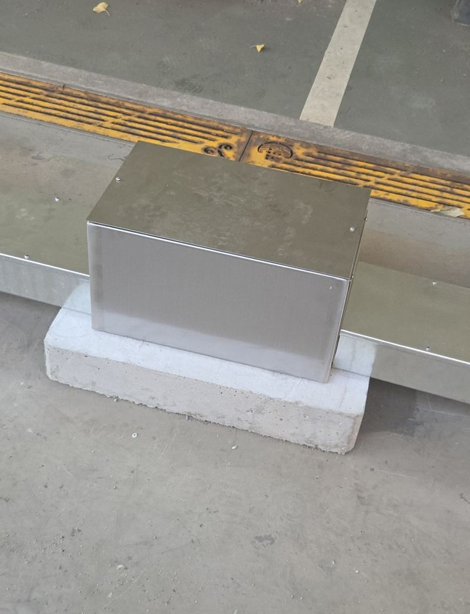
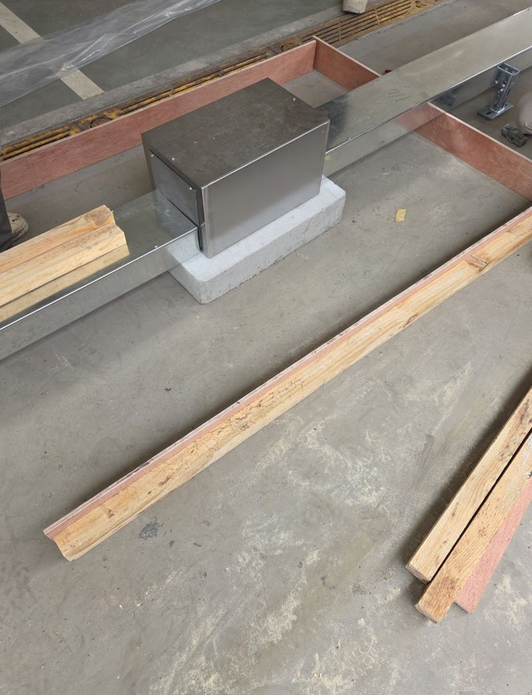
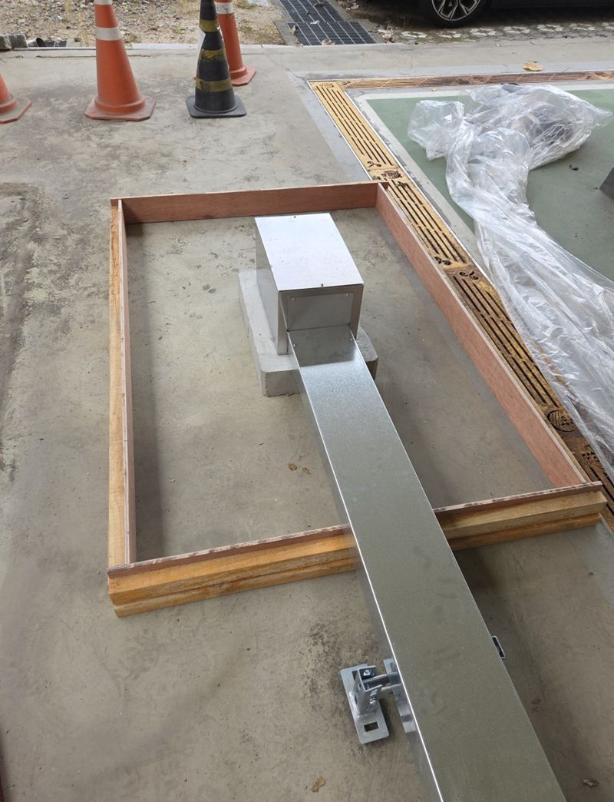
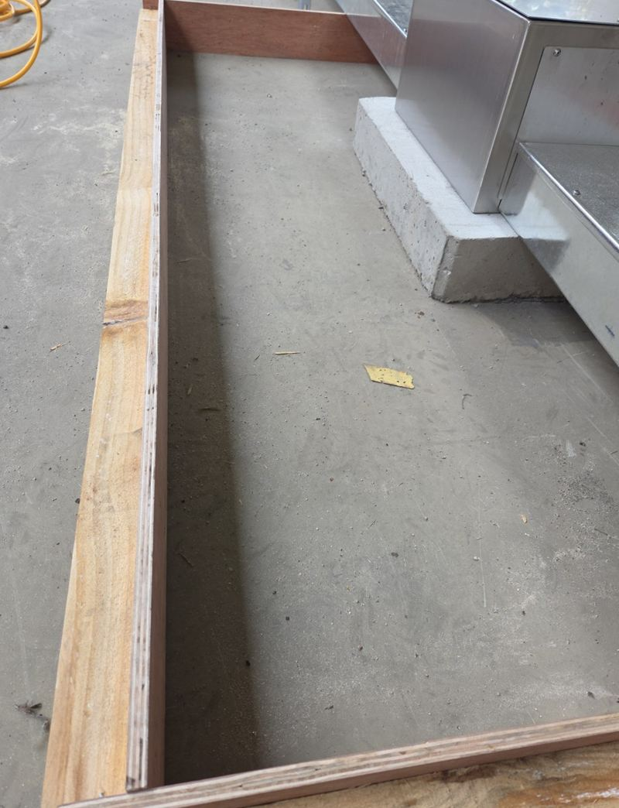
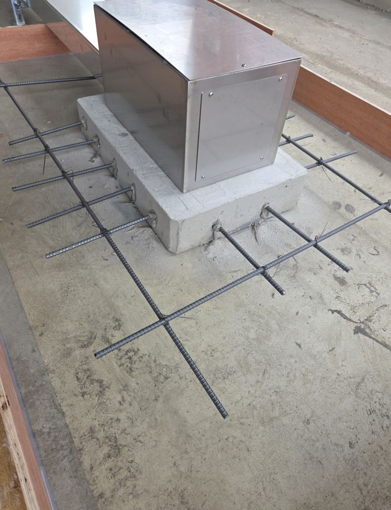
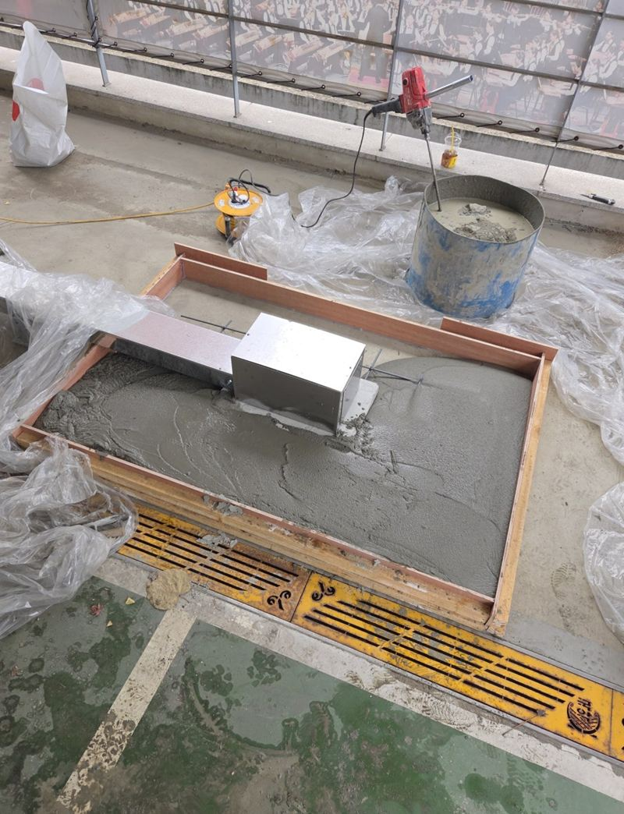

용인 기흥 시멘트 패드 소형 거푸집 설치 방법
← 밀어서 전후 비교 →
외부에 장비를 올려 두는 콘크리트 받침이 좁아서, 한쪽이 패드 밖으로 걸쳐 있던 현장이에요. 무게가 한쪽으로 쏠리고 흔들림도 생겨 불안하다고 하셨어요. 기존 패드는 살리고, 옆으로 거푸집을 대서 원하는 크기만큼 이어 붙였어요.
| 현장 | 용인 기흥 관곡로, 외부 장비 받침 |
|---|---|
| 문제 | 패드가 좁아 장비가 한쪽으로 걸치고 흔들림 |
| 한 일 | 기존 패드 점검 → 기준선 → 거푸집 → 철근 → 타설·표면 정리 |
| 포인트 | 기존 패드와 높이를 맞춰 턱 없이 이어 붙이기 |
기존 패드부터 살펴봤어요
새 콘크리트를 붙이려면 기존 패드가 튼튼해야 해요. 표면에 금이 없는지, 두께는 얼마인지, 새로 붙일 쪽과 높이가 맞는지 확인했어요. 그다음 넓힐 범위를 정하고 기준선을 띄웠어요. 높이가 조금만 달라도 장비가 기울거나 턱이 생겨요.


합판과 각재로 작은 틀 짜기
합판과 각재로 바깥 틀을 짜서 단단히 고정했어요. 타설할 때 시멘트가 틀 밖으로 새거나 틀이 밀리면 모양이 망가져요. 거푸집은 크기는 작아도 패드 모양을 정하는 가장 중요한 단계예요.


철근을 넣고 콘크리트 붓기
거푸집 안에 철근을 간격 맞춰 깔았어요. 철근은 콘크리트가 무게를 받을 때 갈라지지 않게 잡아 주는 뼈대예요. 무거운 장비가 올라가는 자리일수록 꼭 넣어요.

콘크리트를 고르게 채운 뒤 표면을 흙손으로 정리하며 기존 패드와 높이를 맞췄어요. 굳는 동안 밟거나 물건을 올리지 않도록 안내하고, 충분히 굳힌 뒤 거푸집을 떼어 냈어요.

시멘트 패드가 필요한 곳
- 실외기·발전기·물탱크 받침흙바닥이나 블럭 위에 두면 기울어지고 진동이 커져요.
- 창고·컨테이너 기초네 모서리가 같은 높이에 앉아야 문이 잘 맞아요.
- 쓰레기 분리수거장 바닥물청소가 잦은 곳은 콘크리트로 평평하게 해 두면 관리가 편해요.
- 기존 패드가 좁거나 깨졌을 때이 현장처럼 옆으로 이어 넓히거나 깨진 부분만 다시 쳐요.
콘크리트 패드 질문
패드 두께는 어떻게 정하나요?
올릴 물건 무게와 바닥 상태를 보고 정해요. 무거운 장비일수록 두께와 철근을 더해요.
얼마나 지나야 장비를 올릴 수 있나요?
여름과 겨울, 패드 두께에 따라 굳는 속도가 꽤 차이 나요. 서둘러 올리면 모서리가 깨질 수 있어서 날짜를 정해 알려 드려요.
기존 패드와 이음 부분이 갈라지지 않나요?
높이를 맞추고 철근으로 보강해 하나처럼 버티게 해요. 이음선에 가는 줄이 보일 수는 있어요.
작은 면적도 해 주시나요?
네, 실외기 한 대 받침 정도의 작은 패드도 거푸집을 짜서 시공해요.
거푸집은 작업 후 떼어 가나요?
콘크리트가 굳은 뒤 떼어 내고 주변을 정리해요. 떼는 시점은 굳는 상태를 보고 정해요.
울퉁불퉁한 흙바닥 위에도 칠 수 있나요?
흙을 고르고 다진 다음 거푸집을 대요. 바닥이 무르면 자갈을 깔아 받침을 만들어요.
패드 위에 장비를 고정하는 앙카도 박아 주나요?
콘크리트가 충분히 굳은 뒤에 앙카볼트로 장비를 고정할 수 있어요. 장비 다리 위치를 미리 알려주세요.
다른 바닥 보수 현장
패드 자리 사진과 올릴 장비의 크기를 알려주세요.
전화 상담 010-4517-9872